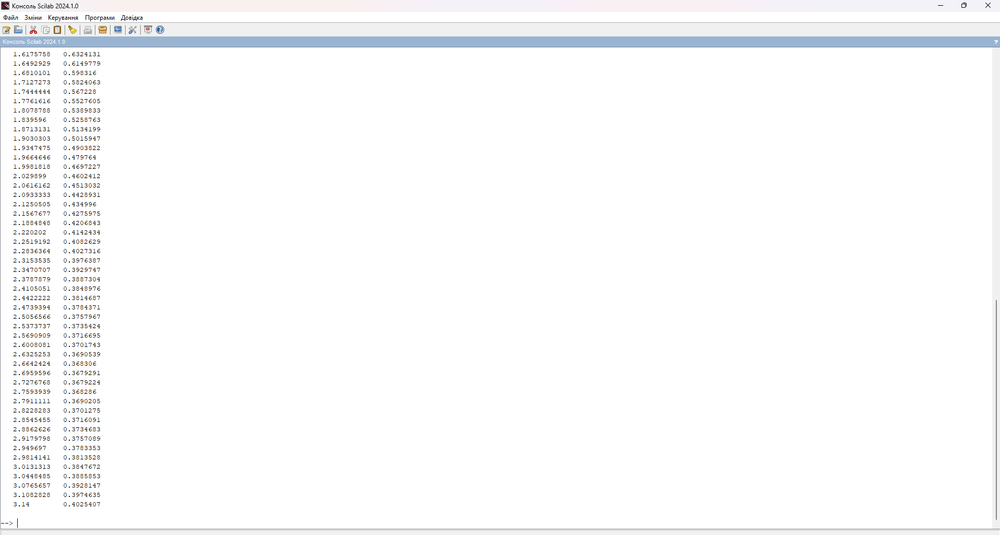

Завдання 1.1
Побудувати за допомогою Scilab графік функції згідно з варіантом на довільному відрізку. Знайти
значення функції у довільних точках, протабулювати (отримати таблицю значень) цієї функції на відрізку
[0;π], змінення значення змінної виконувати з довільним кроком.
Виконати перевірку отриманого результату шляхом побудови того самого графіка у MS Excel. Результати
порівняти.
ВАРІАНТ 2
Функція:
\[y = e^{\sin(x+2)}\]
Код Scilab:
1.1.sce
x = linspace(0, 3.14, 100);
y = exp(sin(x+2));
plot(x, y);
xlabel('x');
ylabel('y');
title('Графік y = exp(sin(x+2))');
disp([x', y']);
Результат виконання програми у Scilab (рисунок 1 - 2):
Рисунок 1 - Графік функції y = e^(sin(x+2))
Рисунок 2 - Табулювання функції на відрізку [0;π]
Таблиця Excel (рисунок 3):
Рисунок 3 - Таблиця Excel
Висновок
Порівнюючи отримані результаті у Scilab та Excel, графіки виходять ідентичними попри розбіжності у табулюваннях між двома програмами.